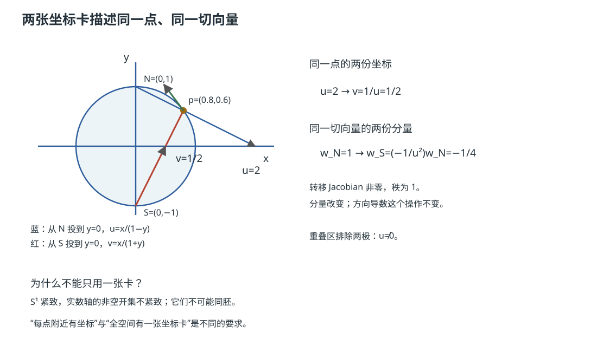

本页目录
流形几何 I · 光滑流形与切空间
对标：Lee Smooth Manifolds §1–3 ｜ 前置：本科拓扑 I–II、数分 V、微分几何 I–II 流形 = "局部像 \(\mathbb{R}^n\)、整体可以弯曲缠绕"的空间——把微积分从欧氏空间解放到一般弯曲对象上的语言工程。本页立好三块基石：流形的定义（图册）、光滑映射（借坐标定义、验证与坐标无关）、切空间（没有外部空间时"切向量"是什么——本课程第一个真正的抽象飞跃）。
学习层：地图换算、切向量与秩检查
1. 具身情境：一颗行星的地图没有“全局经纬线”
想给一颗圆形行星做地图：从北极投影得到一张坐标卡，从南极投影得到另一张。每一张地图都只覆盖一个开邻域，不能把整颗圆硬塞进一张无奇点的欧氏图；真正需要检查的是两张地图重叠部分的换算是否光滑。球面只是同一件事的二维版本。
2. 先预测：坐标换算会不会把方向压扁？
先不打开实验台，预测三件事：
- 在 \(S^1\) 的两个立体投影卡上，若北卡坐标为 \(u\neq0\)，南卡坐标 \(v\) 是 \(u\)、\(1/u\) 还是 \(u^2\)？其 Jacobian 的秩是多少？
- 在 \(S^2\) 上，\(v=u/\|u\|^2\) 的二维 Jacobian 会不会满秩？
- 对锥面 \(F^{-1}(0)\)，锥尖 \(p=(0,0,0)\) 是否满足正则值定理的秩条件？
3. 形式桥：内在转移与外部嵌入分栏
圆的两张立体投影卡可写成
于是重叠区的转移为 \(v=1/u\)，\(D(v/u)=[-1/u^2]\)。球面的二维版本是
其 Jacobian 在 \(u\neq0\) 时可逆，行列式为 \(-\|u\|^{-4}\)。这两行是内在图册的换坐标；实验台旁边的圆/椭圆/锥形只是嵌入 \(\mathbb{R}^n\) 的外部画面，不能把画面当作流形的定义。
切空间再用正则值账本对接：若 \(F:\mathbb{R}^N\to\mathbb{R}^k\)，则嵌入子流形在 \(p\) 处的切空间是 \(\ker dF_p\)；正则值条件要求对所有 \(p\in F^{-1}(q)\) 都有 \(\operatorname{rank}dF_p=k\)。
无 JavaScript 时的静态读法：
| 对象 / 检查点 | 坐标或 Jacobian | rank / 结论 |
|---|---|---|
| \(S^1\) 两卡 | \(v=1/u\)，\(D=[-1/u^2]\)（\(u\neq0\)） | rank \(=1\)，转移局部可逆 |
| \(S^2\) 两卡 | \(v=u/\|u\|^2\)，\(\det D=-\|u\|^{-4}\) | rank \(=2\)，转移局部可逆 |
| 圆 \(F=x^2+y^2\)，level \(1\) | \(dF_p=[2x,2y]\)，\(p\in S^1\) | rank \(=1\)，\(\dim\ker dF_p=1\) |
| 球面 \(F=x^2+y^2+z^2\)，level \(1\) | \(dF_p=[2x,2y,2z]\)，\(p\in S^2\) | rank \(=1\)，\(\dim\ker dF_p=2\) |
| 锥面 \(F=x^2+y^2-z^2\)，level \(0\) 的普通点 | \(dF_p\) 满秩 | \(\ker dF_p\) 是二维切空间 |
| 锥面 \(F=x^2+y^2-z^2\)，level \(0\) 的锥尖 | 锥尖 \(p=0\) 时 \(dF_0=[0,0,0]\) | rank \(=0\)，\(0\) 不是正则值；这里只报告三维 Jacobian kernel，不称切空间 |
表格中的几个点用于读公式；正则值的全称不是“抽到几个点都过关”，而是 level set 中每一点都要满秩。锥面的普通点切空间是二维，锥尖没有定义良好的流形切空间；锥尖的失败足以阻止整条 level set 作为光滑嵌入子流形被正则值定理认证。
4. 误区 / 边界：三组容易混淆的词
- 内在图册 ≠ 嵌入画面：流形可以先作为抽象拓扑空间定义；嵌入只提供一种可视化与计算方式。
- 局部坐标 ≠ 全局覆盖：一张卡只需覆盖一个邻域，图册的联合覆盖才覆盖 \(M\)；球面没有无奇点的单张欧氏坐标。
- 正则值 ≠ 任意 level set：\(F^{-1}(q)\) 只有在每个原像点满秩时才由定理保证为子流形；奇异 level set 不能靠“看起来像曲面”补条件。
- 切向量 ≠ 外部箭头本身：导子定义在没有嵌入时仍然成立；嵌入中的核 \(\ker dF_p\) 是它在该表示下的具体模型。
5. 回到正式语言
图册的转移映射把“借坐标定义、换坐标验证”变成一个严格协议；导子把 \(T_pM\) 定义成作用在 \(C^\infty(M)\) 上的方向导数；正则值定理则把满秩 Jacobian 翻译成局部平直的子流形。实验台的 rank ledger 只负责把这三层字典在 \(S^1\)、\(S^2\) 和锥面上对齐。
6. 迁移题
若把圆的半径从 \(1\) 改为 \(r>0\)，哪些 chart transition 不变，哪些 \(dF_p\) 的数值改变？再说明为什么“每个点都有某张坐标卡”不等于“存在一张覆盖全空间的坐标卡”。

1. 光滑流形：图册的语言
定义 \(n\) 维拓扑流形 \(M\)：Hausdorff、第二可数（拓扑 II 的分离性与可数性在此当门卫——排除病态例）、且每点有邻域同胚于 \(\mathbb{R}^n\) 的开集。坐标卡是同胚 \(\varphi_\alpha:U_\alpha\to V_\alpha\)，其中 \(U_\alpha\subset M\) 开、\(V_\alpha\subset\mathbb{R}^n\) 也开；一族覆盖全 \(M\) 的卡即图册。
光滑结构：任意两卡的转移映射 \(\varphi_\beta\circ\varphi_\alpha^{-1}\)（欧氏开集之间的映射——可以谈光滑！）都 \(C^\infty\)。读法：流形本身没有坐标，光滑性是"换坐标的方式"携带的——地图集的隐喻是字面的：地球没有经纬线，但任两张地图的换算是光滑的。
例子库：\(\mathbb{R}^n\)、球面 \(S^n\)（两个立体投影卡——转移映射 \(x \mapsto x/\|x\|^2\) 光滑 ✓）、环面 \(T^n\)、射影空间 \(\mathbb{RP}^n\)（拓扑 I 商空间机器的产品）、矩阵群 \(GL_n\)（开子集）与 \(SO(n)\)（下述正则值技术的产品）、构型空间（机器人臂的姿态全体——流形语言的工程户口）。
光滑映射：\(f: M \to N\) 光滑 = 每对坐标卡下的表示 \(\psi\circ f\circ\varphi^{-1}\) 光滑（转移映射的光滑性保证定义与选卡无关——"借坐标定义、验证无关性"是本课程反复使用的仪式）。微分同胚 = 光滑可逆且逆光滑（流形世界的"相等"）。
2. 切空间：没有外部空间的切向量
微分几何 I/II 的曲线曲面活在 \(\mathbb{R}^3\) 里，切向量是外部空间的箭头；抽象流形没有"外面"——切向量必须内在地定义。两条等价路线：
路线 A（曲线速度）：过 \(p\) 的光滑曲线 \(\gamma\) 的等价类（在任一坐标卡下速度相同者等价）——直观但依赖坐标验证。
路线 B（导子，正式定义）：\(T_pM\) = 满足 Leibniz 律的线性泛函 \(v: C^\infty(M) \to \mathbb{R}\)（\(v(fg) = v(f)g(p) + f(p)v(g)\)）全体——"切向量 = 方向导数算子"：不问箭头指哪，只问"沿它求导是什么操作"（把对象定义为它的作用——代数化的现代口味，与"分布 = 对测试函数的作用"pde2-01 同一哲学）。
定理 \(T_pM\) 是 \(n\) 维线性空间，坐标卡给基 \(\big\{\frac{\partial}{\partial x^i}\big|_p\big\}\)。 【骨架】 导子性质 + Taylor 展开（Hadamard 引理：\(f = f(p) + \sum(x^i - p^i)g_i\)）逼出 \(v = \sum v(x^i)\frac{\partial}{\partial x^i}\)——分量恰是 \(v\) 作用在坐标函数上的值。\(\blacksquare\)
微分（推前）：光滑 \(f: M \to N\) 诱导线性映射 \(df_p: T_pM \to T_{f(p)}N\)（\(df_p(v)(g) = v(g\circ f)\)——导子的语言里链式法则是定义本身）；坐标下就是 Jacobi 矩阵（数分 V 认祖归宗：多元微分学原来一直在做流形的局部理论）。
3. 子流形与正则值（造流形的机器）
定理（正则值定理 / 隐函数定理的流形版） \(f: M \to N\) 光滑，\(q \in N\) 是正则值（\(df_p\) 满秩 \(\forall p \in f^{-1}(q)\)），则 \(f^{-1}(q)\) 是 \(\dim M - \dim N\) 维嵌入子流形。注意这里的“\(\forall\)”不能被几个绘图点或单个数值样例替代。 【骨架】 隐函数定理（数分 V）逐点给出局部坐标平直化——"解集是流形"的判据。\(\blacksquare\) 流水线产品：\(S^n = \{\|x\|^2 = 1\}\)（1 是 \(\|x\|^2\) 的正则值——一行验证）；\(SO(n) = \{A^\top A = I\}\)（维数 \(\frac{n(n-1)}{2}\)——旋转群是流形：Lie 群的入场券）；约束优化的可行集（优化 III 的正则性条件即"约束流形"的合法性——两门课的暗线接通）。
（Whitney 嵌入定理【引用】：任何 \(n\) 维流形可嵌入 \(\mathbb{R}^{2n}\)——抽象流形并不比"欧氏空间里的曲面"更多，但内在语言让证明与计算摆脱嵌入的偶然性。）
4. 练习与要点
例 1（图册亲手造） 给 \(S^1\) 造两卡图册（角度参数 \((0, 2\pi)\) 与 \((-\pi, \pi)\)）：写出转移映射（分段平移）验证光滑——最小流形的完整仪式。
例 2（正则值机器） \(f(x,y,z) = x^2 + y^2 - z^2\)：\(f^{-1}(1)\) 是流形（单叶双曲面——解几 II 的曲面获得正式身份）；\(f^{-1}(0)\) 在锥尖处 \(df = 0\)，所以 0 不是正则值，正则值定理不能把整个 level set 认证为光滑子流形。离开锥尖的普通部分仍有二维切空间，可单独研究；锥尖只留下三维 Jacobian kernel，不能把它叫作切空间——机器的适用边界一题看清。
例 3（🔗 数据流形假设） "自然图像分布在低维流形附近"（ai/comfy 课的口头禅）：本页给这句话的每个词以定义——维数 = 图册的 \(n\)（内在自由度：光照/姿态/表情），切空间 = 局部合法扰动方向（对抗样本工作在法方向、数据增强工作在切方向——一句话的几何分类）。\(\blacksquare\)
下一页：在流形上积分——微分形式、外微分与 Stokes 定理：数分 VI 三大公式的终极统一。